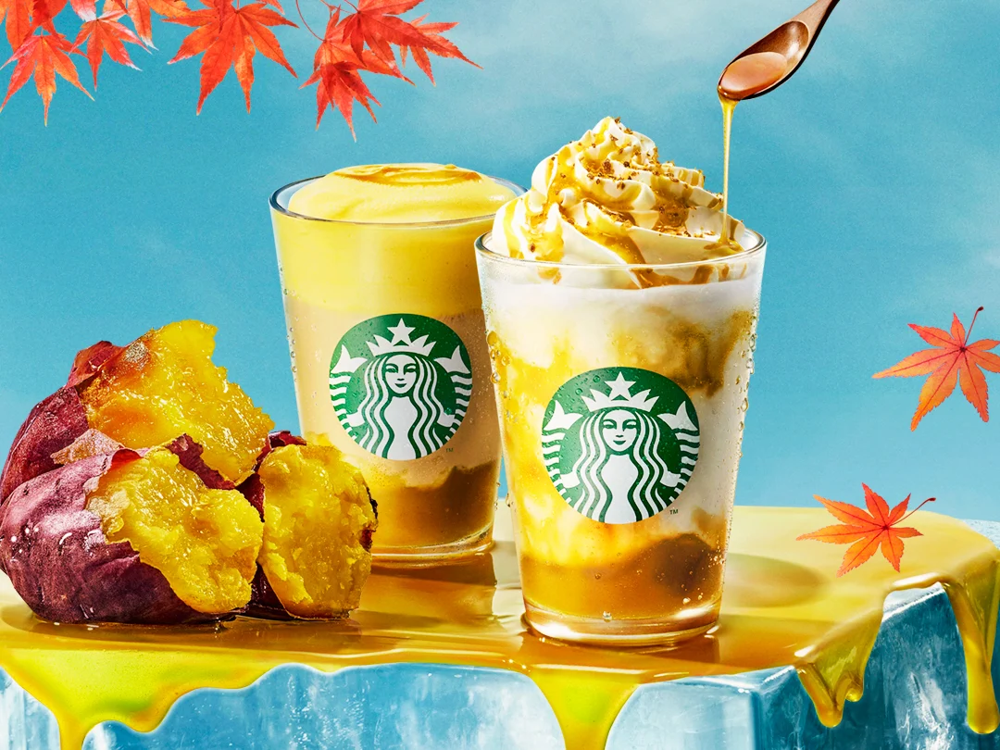

ブランドの起源
シアトルから世界へ広がる人魚のレジェンド
スターバックスは1971年、アメリカのワシントン州シアトルで、コーヒーの焙煎・販売を行う小さなお店として誕生しました。ブランド名は、小説『白鯨』に登場する一等航海士「スターバック（Starbuck）」に由来し、ロゴにはギリシャ神話に登場する二尾の人魚「サイレン（Siren）」が描かれています。当初は豆の販売のみでしたが、ハワード・シュルツ氏の参画によってイタリアのカフェ文化が導入され、現在の「シアトル系エスプレッソ」という世界的なブームを巻き起こす一大チェーンへと成長しました。
コーヒーを超えた価値：看板メニューと「サードプレイス」
スターバックスの成功は、単に質の高いコーヒーを提供するだけでなく、「サードプレイス」という空間価値を確立したことにあります。店内にはWi-Fiや電源が完備され、誰もがリラックスして過ごせる環境が整えられています。また、看板メニューである「フラペチーノ®」や、四季折々の「季節限定ドリンク」は、常にSNSで話題となり、若者を中心とした強力なファン層を築き上げています。

未来へのコミットメント
近年、スターバックスはグローバル企業として「サステナビリティ」の取り組みを加速させています。コーヒー豆の倫理的な調達（C.A.F.E.プラクティス）をはじめ、プラスチックストローの廃止、植物性ミルクの選択肢拡大などを推進しています。さらに、地域の伝統文化や環境に配慮した「リージョナル ランドマーク ストア」や「グリーナーストア」を国内外に展開し、地球環境と地域社会の双方向に貢献するブランドを目指しています。